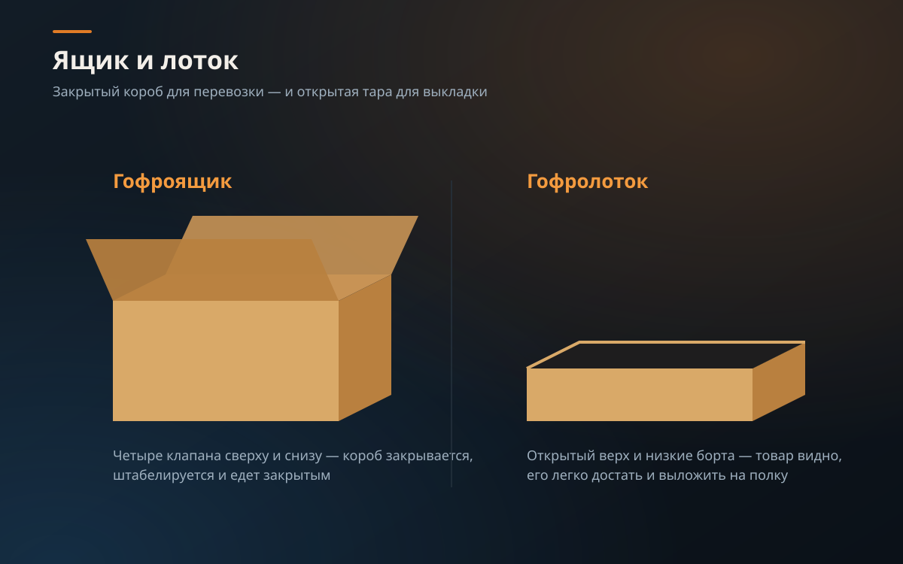
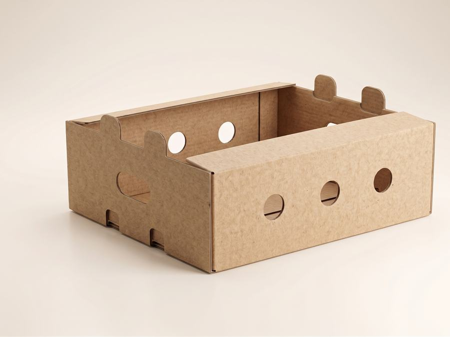
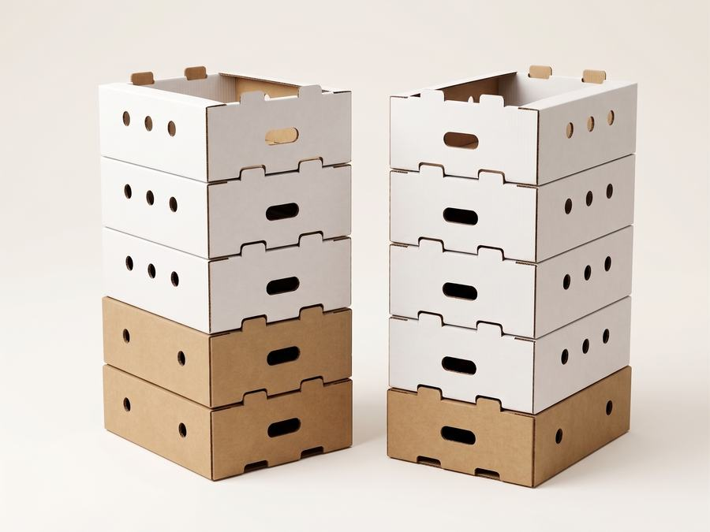
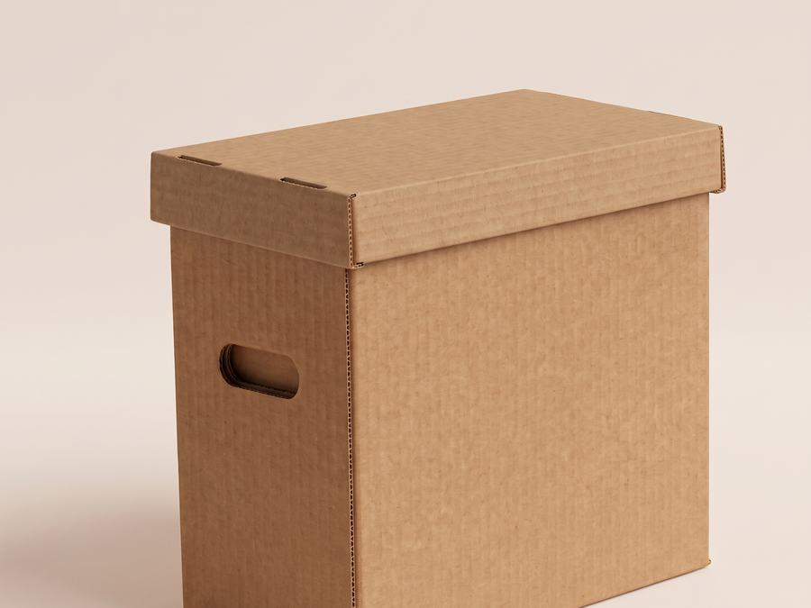

Гофроящик — закрытая тара: четыре клапана сверху и снизу, товар едет и хранится внутри. Гофролоток — открытая: низкие борта, товар видно и его легко достать. Везёте и храните — берите ящик, выкладываете и быстро отпускаете — лоток.
Ошибочно выбирать тару «по картинке»: решает не форма, а то, что происходит с товаром дальше. Если груз штабелируют в несколько рядов на складе или везут далеко — нужен закрытый ящик, даже если по факту это единица выкладки. Если же товар должен быть виден и легко доставаться на полке или прилавке — даже прочный ящик здесь не поможет, нужен именно лоток с низкими бортами.

Сравнение
| Признак | Гофроящик | Гофролоток |
|---|---|---|
| Борта | Высокие, товар закрыт со всех сторон | Низкие, товар виден сверху |
| Верх | Клапаны сверху и снизу, закрывается | Открытый |
| Для чего | Перевозка, хранение, отправка заказов | Групповая упаковка, выкладка в торговом зале |
| Типичный груз | Штучный товар, сборные заказы, тяжёлые партии | Овощи, фрукты, мясо птицы, штучный товар на полке |
| Размеры, мм | от 200×200×250 до 600×400×400 | 380×285×120, 380×285×90, 300×215×60, 290×190×55 |
Закрытая тара с клапанами сверху и снизу. Держит форму при штабелировании, защищает товар со всех сторон при перевозке и хранении на складе. Лучший выбор для отправки заказов, сборных партий и тяжёлого товара.
Открытая тара с низкими бортами. Товар виден и достаётся сразу, лотки штабелируются друг на друга без клапанов. Подходит для скоропорта, групповой упаковки и выкладки в торговом зале.
Когда брать ящик
Ящик — самая ходовая транспортная тара. Четыре клапана сверху и снизу, сборка в одно движение, надёжная фиксация товара. Он закрывается, поэтому подходит для отправки заказов и для склада, где коробки стоят в стопке. Ходовые размеры держим на складе, остальное делаем под заказ: из Т-22 под обычный товар и из пятислойного П-32 — под тяжёлый и габаритный. Чем эти марки отличаются, разобрано в статье про марки.
Когда брать лоток
Лоток удобен и на складе, и на полке: товар видно сразу, лотки штабелируются друг на друга. Это рабочая тара для скоропорта и групповой упаковки — овощи, фрукты, салаты, рассада, мясо птицы. Отдельная позиция — куриный лоток 538×378×108 мм из Т-23В: самосборный, с рёбрами жёсткости и отверстиями для штабелирования, морозостойкий, не впитывает влагу и подходит для длительной заморозки. Минимальная партия — 25 шт., на паллете 700 шт.
А если нужно и то, и другое
Частая схема: товар едет в ящике, а на точке перекладывается в лоток под выкладку. Ещё вариант — короб без верхних клапанов: у нас это четырёхклапанный короб без верха, промежуточный вариант между ящиком и лотком. Если внутри едет что-то хрупкое, добавьте прокладки или решётку — они удержат товар на месте.



Частые ошибки при выборе
- Берут лоток там, где нужен закрытый ящик: при перевозке навалом или штабелировании в несколько рядов открытая тара не защищает товар сверху и по бокам, груз в пути мнётся и пылится.
- Заказывают ящик под товар, который нужно быстро выкладывать и отпускать — каждый раз открывать клапаны неудобно, для этого больше подходит лоток или короб без верхних клапанов.
- Не учитывают штабелирование лотков: без рёбер жёсткости и отверстий для фиксации лотки при высокой стопке «плывут» — для таких задач нужна усиленная конструкция, как у куриного лотка.
- Выбирают тару под скоропорт без учёта влаги: для заморозки и продуктов с высокой влажностью нужен картон с влагостойкой пропиткой, а не любой попавшийся лоток.